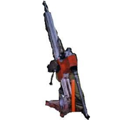

Rozebíratelná stavební vrtná souprava
HILTY DD 750 - HY
Technologie vrtání
- Jádrově rotační stavebními DIA korunkami s vodním výplachem v profilech D 46 – 250 mm, možno vrtat šikmo, svisle i vodorovně s přímým odsáváním výplachové vody.
- Jádrově rotační vrtání s TK korunkami na sucho i s vodním výplachem v profilech D 56 - 137 mm.
- Jádrově rotační vrtání s DIA geologickými korunkami s vodním výplachem v profilech D 59 – 112 mm
Technické parametry
- průměr DIA vrtání: 46–250 mm
- max. hl. jádrového vrtu: 10 m
- výška věže: 2 m
- pohon: el. agregát 15 kW
- otáčky vřetene: 80-120-240-400 ot/min
- vrtý přítlak: 900kp (8,8 kN)
- tah na vřetenu: 900 kp (8,8 kN)